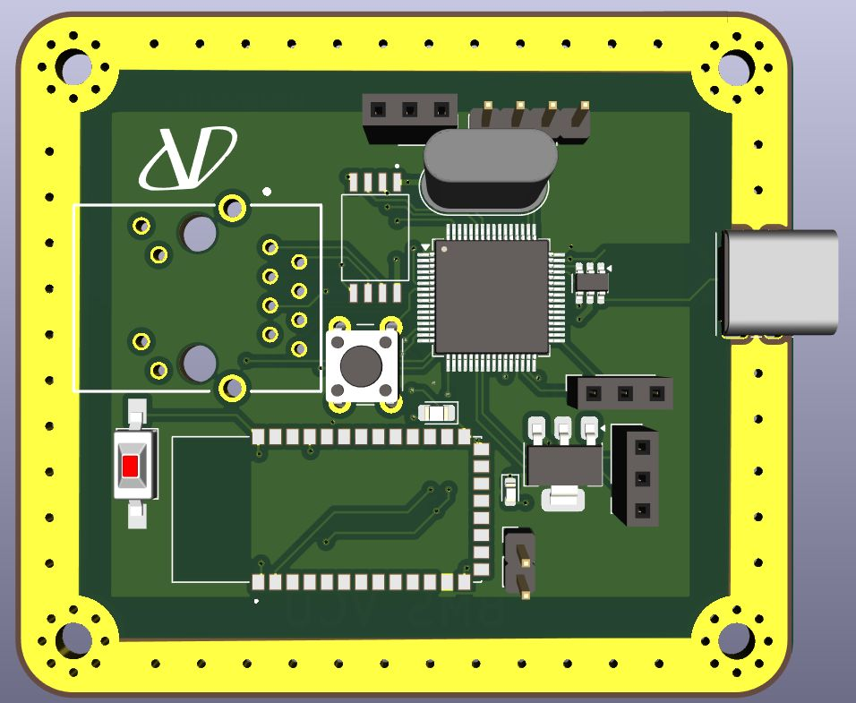
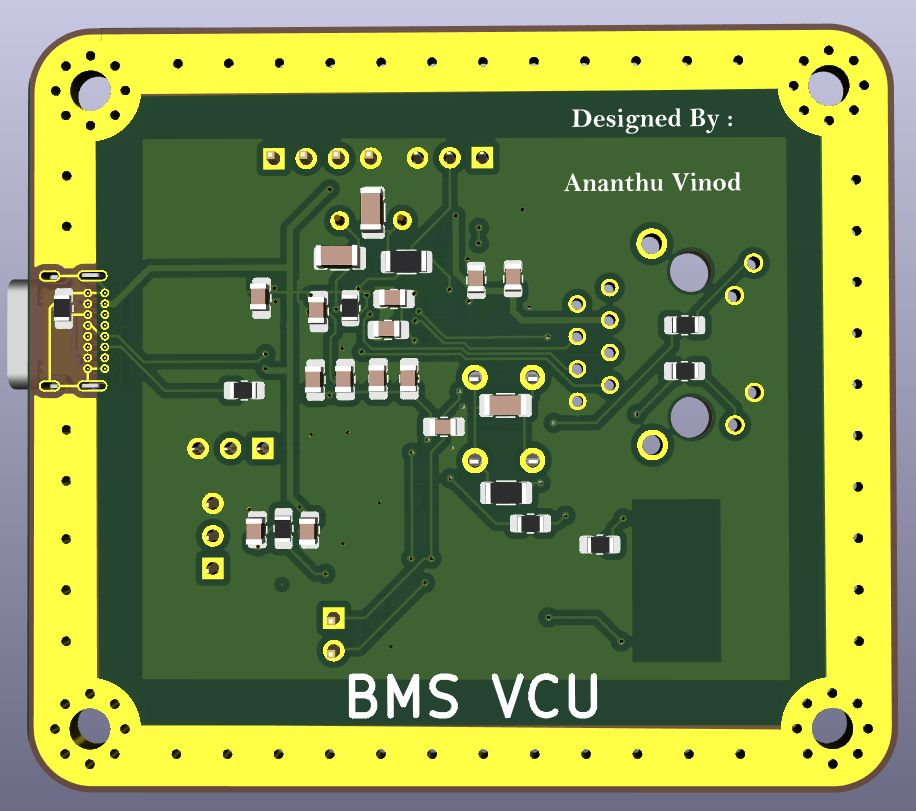
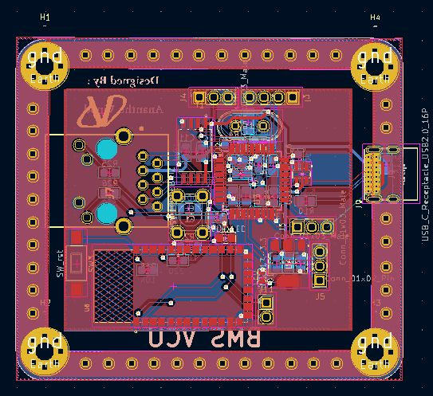

ANANTHUKRISHNA VINOD
Second Year ECE AIML student | MIT World Peace University
Second Year ECE AIML student | MIT World Peace University
I’m an engineering enthusiast with a strong curiosity for both the skies and the markets — deeply interested in aerospace engineering and finance. I enjoy exploring how advanced technology can solve complex real-world problems, while also understanding how financial systems drive the world around us.
Currently, I’m sharpening my programming skills in Java and Python, aiming to bridge the gap between engineering innovation and financial insight. Whether it’s building tech that flies or modeling data that speaks, I’m driven by a desire to learn, improve, and make an impact.
Open to opportunities that allow me to grow, collaborate, and apply my multidisciplinary interests in exciting ways.
Let’s connect and share ideas!
1. ANTI SLEEP ALARM FOR DRIVERS
View Report
• Developed an Anti-Sleep Alarm for Drivers using Arduino and sensors to detect drowsiness and alert the driver in real-time.
2. ADVANCED DRIVER ASSISTANCE
SYSTEM (ADAS)
View Report
• Built a mini prototype of an Advanced Driver Assistance System (ADAS) using an ESP32 microcontroller to demonstrate real-time safety features for enhanced driver support
• Mathworks Signal Processing Onramp
View Certificate
• MATLAB Onramp
View Certificate
• Critical Thinking & Problem Solving
View Certificate
• Data Visualization and Building Dashboards with Excel and Cognos
View Certificate
• Introduction to Personal Financial Planning
View Certificate
• Introduction to Social-Emotional Learning
View Certificate
• Measuring Sustainable Development
View Certificate
• Teamwork & Collaboration
View Certificate
• Manufacturing Engineer - Skytroopers, MITWPU | 2023
• Junior Sense and Control Engineer at Vegapod Hyperloop, MITWPU. | 2024 - 2025
  Deputy Head Boy, Indian School Al Wadi Al Kabir, Oman | 2021 – 2023
• Served as a key member of the School Head Council team.
• Represented the student body, contributed to leadership initiatives, and supported school events and administrative coordination.
Phone: +91 8714976640
Email: ananthukrishna.vinod@mitwpu.edu.in
LinkedIn: Ananthukrishna Vinod